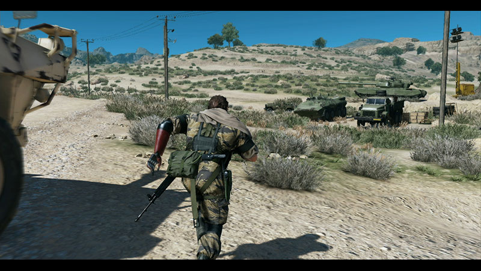

CG - le 17/12/2015 - jeux vidéo, dossier
C’est le 1er septembre 2015 que Metal Gear Solid V : The Phantom Pain a enfin
débarqué sur consoles et PC, soit un an et demi après son prologue intitulé « Ground Zeroes ». Volet ultime de la saga d’infiltration `créée par Hideo Kojima, celui-ci nous place une nouvelle fois aux commandes du charismatique Snake aka « Big Boss », dans un opus aussi grisant que déroutant.
Un serpent en liberté
MGS V : Ground Zeroes se clôturait avec la destruction de la Mother Base
entraînant l’annihilation totale de Snake et de son armée
de mercenaires « Militaires Sans Frontières ». Néanmoins,
il en faut plus pour venir à bout du soldat légendaire qui se
réveille au terme d’un coma de 9 ans avec la ferme intention de se venger
de Skull Face, instigateur de cet événement tragique et leader de l’unité XOF, affilié à l’organisation secrète Cipher.
Mais laissons pour le moment la partie scénaristique de côté pour se concentrer sur le gameplay de ce nouvel opus qui vient bousculer ce à quoi nous avait habitués la série.
Après une introduction ultra scriptée dans la veine de ce que nous a livré MGS 4, on est largué en Afghanistan avec une liberté d’action jamais vue au sein de la franchise.
En effet, fini les intérieurs confinés, MGS V nous offre la possibilité de déambuler à
l’air libre dans les vallées afghanes et un peu plus tard en Afrique centrale.
Concrètement, le titre reprend le gameplay de MGS V : Ground Zeroes en y améliorant certains aspects. On se retrouve donc aux commandes d’un Snake agile, capable d’escalader des obstacles, de sprinter, ou encore de conduire des véhicules.
Sur le terrain, deux grandes possibilités s’offrent à nous. On peut parcourir les différents environnements librement afin d’effectuer des opérations secondaires, ou exécuter des missions principales dans le but de faire avancer l’histoire découpée en épisodes.
Lors de celles-ci, il faut accomplir des objectifs bien précis comme extraire un prisonnier, éliminer une cible ou encore détruire une colonne de blindés au sein d’une zone délimitée et parfois, dans un temps imparti.
A l’aventure compagnon !
Pour nous aider dans notre tâche, on peut compter sur le soutien d’un hélicoptère de combat, servant également à nous trimballer entre les différents théâtres d’opérations, ainsi que sur un coéquipier contrôlé par l’ordinateur et auquel il est possible de donner des ordres plus ou moins nombreux selon le taux d’affinité que l’on partage avec lui. Au nombre de quatre, nos « buddies » ont tous des compétences très utiles. D-Horse, notre cheval, est parfait pour se déplacer rapidement d’un point à un autre de manière plus discrète qu’avec un autre moyen de transport tandis que D-Dog, un gentil toutou, est idéal lors des missions d’infiltration, repérant et marquant automatiquement tout ce qui nous entoure à 100 mètres à la ronde (soldats, prisonniers, armes, champ de mines, plantes, animaux…). Plus tard dans le jeu, deux autres compagnons un peu plus à l’aise en cas d’échanges de tirs avec l’ennemi deviennent disponibles : la belle Quiet et le D-Walker. La première nous offre une couverture sans faille grâce à ses talents de sniper alors que le second, un véhicule bipède très mobile et personnalisable avec de l’armement lourd, augmente largement notre taux de survie face à un tank ou un hélico adverse.
Jamais sans mon carton
’il est possible d’effectuer la plupart des missions en mode rambo, il ne faut pas oublier que MGS V est avant tout un jeu d’infiltration. Il est donc souvent plus judicieux d’avancer sans se faire repérer plutôt que de tout faire péter au lance-roquettes. De plus, la difficulté du jeu s’adapte automatiquement à notre manière de jouer. Par exemple, si l’on persiste à la jouer trop bourrin, les soldats ennemis se muniront rapidement d’équipements de protection ainsi que d’armes lourdes pour nous renvoyer la politesse puissance 10. D’ailleurs, bien que l’on observe encore quelques réactions qui frisent la débilité profonde, l’IA adverse est tout de même plus organisée et virulente que dans les précédents volets, passant en alerte au moindre évènement trahissant notre présence dans le coin. Enfin, un joueur choisissant la discrétion lors de l’accomplissement des missions obtiendra plus de PIM (pour Produit Intérieur Militaire), qui est tout simplement la monnaie du jeu et qui permet de financer tout un tas de choses, dont la construction de notre base militaire off-shore.
I want you for Big Boss Army
Metal Gear Solid V : Phantom Pain reprend le concept de gestion de sa base introduit dans l’épisode Portable Ops et sublimé dans MGS : Peace Walker. Comme dans cet opus, notre Mother Base contient plusieurs unités. La section R&D s’occupe du développement de nouvelles armes et équipements,
les unités de renseignement et de soutien apportent un appui logistique à Snake sur le terrain (marquage de points d’intérêts sur la carte, largage d’approvisionnement…),
la plate-forme médicale maintient le personnel de la base en bonne santé et l’équipe de développement de base s’occupe des ressources indispensables à son expansion.
Une unité de combat est également présente avec la possibilité d’envoyer en opération extérieure les soldats qui y sont affectés. Se déroulant virtuellement en arrière-plan du jeu,
elles permettent, en cas de réussite, d’obtenir des ressources, des PIM et du nouveau personnel. On peut aussi déployer nos forces sur des missions visant à détruire les armes et les équipements des soldats ennemis,
ces actions ayant une influence directe sur les troupes rencontrées par Snake.

Cependant, pour faire correctement tourner sa Mother Base, augmenter le niveau de ses unités et par conséquent avoir accès à de meilleures armes et un meilleur soutien, il va falloir trouver du personnel compétent. Encore une fois les habitués de MGS : Peace Walker ne seront pas dépaysés avec un système de recrutement similaire à ce que l’on trouve dans celui-ci.
En effet, dès les premières heures de jeu on obtient le fameux système Fulton, nous permettant d’extraire presque tout ce qu’on croise sur le terrain : prisonniers, ennemis, mais aussi matériel, véhicules, animaux (!). Toutefois, avant d’extraire n’importe qui, on s’assurera de son rang (allant de « E » à « S++ ») en l’analysant grâce à une fonction intégrée à nos jumelles.
En résumé, plus le rang des soldats recrutés est élevé, plus le niveau de l’unité dans laquelle ils sont affectés grimpe.
Un renard qui a de la gueule
La jouabilité aux commandes de Snake couplé à la gestion de la Mother Base donne au final une expérience de jeu vraiment plaisante. De plus, même si les objectifs des missions principales et secondaires sont rapidement redondants, la lassitude ne s’installe pas aussi vite que ce qu’on pourrait penser au premier abord. Cela est notamment dû au fait qu’il y a des dizaines de façons de remplir un objectif selon notre équipement,
mais surtout selon l’heure et les conditions météorologiques. Car le cycle jour/nuit ainsi que la météo ne sont pas là que pour faire joli ; ils ont une énorme influence sur notre manière de jouer et d’appréhender les situations qui se présentent à nous.
Ainsi, infiltrer un endroit en pleine nuit sous une pluie battante sera plus facile dû à la baisse du champ de vision des ennemis, bien plus important en plein jour.
Du côté de la réalisation, le FOX Engine, le moteur graphique maison créé presque pour l’occasion, livre un résultat très convaincant, mais pas sans reproches. Le bon ressenti concerne surtout le travail sur les effets de lumières, donnant lieu à de très belles images en particulier lors du levé et du coucher du soleil.
L’animation des différents protagonistes est elle aussi de bonne facture, voire bluffante par moments (D-Dog semble tellement réel parfois !) et on apprécie grandement la fluidité constante du jeu qui tourne à 60 images/seconde sans aucun ralentissement.
Par contre, on déplore les nombreux bugs de collisions, anecdotiques pour certains, mais franchement énervants pour d’autres, allant parfois jusqu’à nous handicaper lors de phases d’infiltration millimétrées.
L’ambiance sonore quant à elle est excellente malgré l’absence du main theme de la saga. J’ai personnellement beaucoup apprécié les différentes références aux années 80, entre les cassettes audio des hits de cette époque que l’on ramasse sur notre route et les bruitages vintages dont je vous laisse la surprise. Si vous avez 30 ans ou plus, vous aurez obligatoirement une petite larmichette de nostalgie au coin de l’œil à l’écoute de certaines chansons !
Not yet Snake! It’s not over yet!
Maintenant que l’on a fini d’aborder les qualités de ce 5e opus, intéressons-nous à ce qui fâche : son scénario ainsi que sa mise en scène. Autant vous avertir tout de suite, si comme moi vous pensiez que Metal Gear Solid V comblerait le vide dans la timeline de la série entre la fin de MGS : Peace Walker et le tout premier Metal Gear, avec le premier face à face entre Big Boss et Solid Snake,
vous vous mettez le doigt dans l’œil jusqu’au trognon ! The Phantom Pain se concentre uniquement sur l’année 1984 et les révélations qu’il distille sur l’histoire globale de la franchise ne sont finalement pas si indispensables.
De plus, le choix de découper la trame en épisodes casse le rythme de l’ensemble et il est extrêmement irritant de se taper les crédits avant et après chaque mission comme dans une série TV. D’une part, annoncer le casting de personnages que l’on va rencontrer durant la mission ruine totalement l’effet de surprise, et d’autre part, on a compris depuis longtemps que le jeu a été imaginé/créé/écrit/produit/dirigé/codé par Hideo Kojima,
pas besoin de nous le rappeler toutes les 5 minutes !!!
Mais le pire reste le sentiment de frustration que l’on éprouve lorsque l’on termine l’aventure principale dont il manque clairement un gros morceau, ce qui se ressent lors de la seconde moitié du jeu où l’on se retape des missions déjà effectuées dans un niveau de difficulté plus élevé. Conséquence du clash entre Konami et Kojima ou véritable volonté perverse de ce dernier de nous faire expérimenter la fameuse « douleur fantôme » ? Le mystère reste entier.
Malgré ces écueils, il faut tout de même avouer que Metal Gear Solid V : The Phantom Pain contient quelques passages vraiment marquants ainsi qu’une galerie de personnages ultra-charismatiques qui suffisent à nous tenir accrochés à notre manette durant la bonne soixantaine d’heures nécessaire pour clôturer l’aventure principale, et facilement le double si l’on souhaite en faire complètement le tour.
Team Solid VS Team Liquid
En addition de son contenu solo déjà bien fourni, MGS V : The Phantom Pain inclut plusieurs fonctionnalités en ligne. La première est le système de FOB (Forward Operating Base ou Base Avancée).
Sélectionnable depuis le menu de l’idroid vers le milieu de l’aventure, une mission FOB offre la possibilité d’infiltrer la base avancée d’un autre joueur afin de lui piquer du personnel et des ressources.
Toutefois, attention, car on peut nous attaquer en retour. Pour éviter la casse il faut veiller à ce que les défenses de notre FOB soient prêtes à faire face à une intrusion en augmentant le niveau de notre équipe de sécurité et en développant des moyens de défense
(caméra de surveillance, détecteur de mouvement, drones, etc.).
L’autre gros morceau du jeu en ligne est bien évidemment Metal Gear Online 3e du nom. Disponible depuis le 6 octobre, cet add-on gratuit permet de régler ses comptes dans un PvP reprenant le gameplay du jeu principal. Au premier lancement de MGO, on choisit notre avatar ainsi qu’une classe. Au nombre de trois (éclaireur, exécuteur et infiltrateur), elles ont toutes des forces et des faiblesses qu’il faut prendre en compte selon notre manière de jouer.
L’éclaireur est plus à l’aise avec un fusil sniper, l’exécuteur est idéal pour foncer dans le tas, et l’infiltrateur (oui ce mot existe dans les dicos québécois) est parfait pour atteindre un objectif en toute discrétion grâce à sa rapidité, sa maîtrise des techniques CQC ainsi que l’accès au camouflage optique.
Concernant les modes de jeu, ils sont également au nombre de trois. « Bounty Hunter » est une sorte de Match à mort par équipe qui prend fin quand l’une des deux a réduit le nombre de vies adverses à 0, « Cloak and Dagger » n’est ni plus ni moins qu’un traditionnel capture the flag, tandis que dans le mode « Comm Control » il faut se battre pour capturer des liaisons radio et les garder sous nos couleurs le plus longtemps possible.
Enfin, chaque fin de partie donne lieu à l’acquisition de points d’expérience comme dans n’importe quel autre multi, permettant de débloquer de nouvelles aptitudes ou encore des éléments de personnalisation.
Honnêtement, qu’il s’agisse du système de FOB ou de MGO3, la partie online de Metal Gear Solid V n’a que peu d’intérêt, du moins pour le joueur. Car sous ses airs de contenu complètement gratuit se cache un système de jetons à acheter avec de l’argent réel afin de débloquer du contenu parfois exclusif. Un moyen pour Konami de s’échauffer avant d’inonder nos mobiles de F2P blindés de micro-paiements ? Allez savoir.
On touche du doigt la perfection avec Metal Gear Solid V : The Phantom Pain. Disposant d'un gameplay fabuleux, d'une réalisation vraiment chouette et d'un contenu richissime, le titre pêche malheureusement au niveau de sa narration et de son scénario laissant un goût d'inachevé. Il n'en reste pas moins un des jeux de l'année à posséder absolument, aussi bien pour les fans de la première heure que pour les nouveaux venus.
tags :